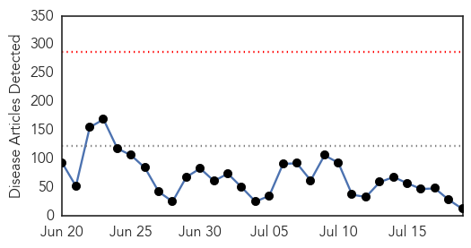
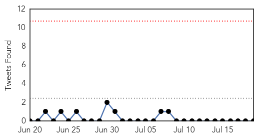
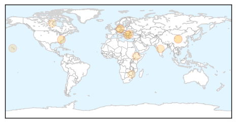
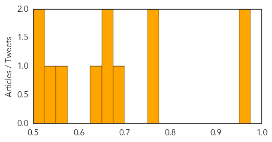

Toggle navigation
Early Warning
Daily Alerts
Unknown
Jul 19, 2015
Compare to:
-
Dengue Fever
Hemmorhagic Fever
Mold/Fungal Infection
Influenza
Meningitis
Pertussis / Whooping Cough
Middle East Respiratory Syndrome
Cholera
Hepatitis
Chikungunya
Yellow Fever
Bubonic Plague
West Nile Virus
Swine Flu
Ebola
Measles
Mumps
30 Day Trends
Web: 0
alerts
, 0
warnings
Twitter: 0
alerts
, 0
warnings
Top Articles:
0.958
After MERS, Korea to beef up health expertise
0.951
New Disease Linked to Three Deaths in Germany
0.770
Sumter couple raises amoeba awareness
0.755
Tele-radiology on cards in Tripura hospital
0.687
70% of water refilling stations do not fully comply with water safety standards
0.655
There should be no concerns over anthrax case
0.655
Epidemiologic investigation on anthrax cases in Bulgaria’s Varna continues
0.647
India Fights Tuberculosis with Technology
0.557
New form of invasive flesh-eating bacteria strain found
0.547
Ethiopia hosts high-level ministerial meeting on health in Africa
0.520
36,000 Masvingo Residents Facing Water Crisis - Zimbabwe
0.518
United Health Foundation’s America’s Health Rankings® Finds Hawaii Ranks No. 2 Compared With Overall Health of Other States
Top Tweets:
No tweets found for Jul 19, 2015
Web/News Articles

Tweets

Article Locations

Article Confidences
